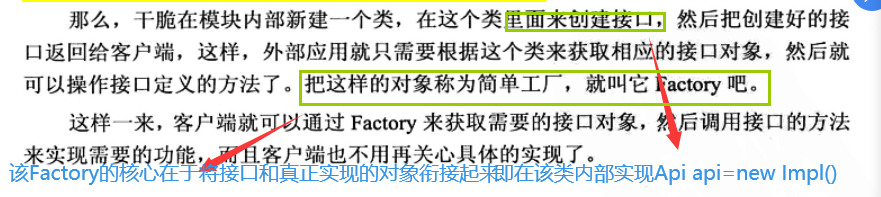

简单工厂模型
简单工厂模型的核心在于对接口的合理使用，实现 "封装隔离"。
- 封装的内部实现，隔离的是外部调用，使得上层开发人员只能看到接口即方法定义
- 封装是系统可插拔性的保证
- 模块化编程,一个Go文件对应一个模块，一个模块对应一个接口和多个实现类，但是对外只有接口可见
落地场景
如果有一个接口叫做Api,另外一个类叫做Impl且实现了Api
一般我们都是 Api api=new Impl()；
创建实例对象Impl赋值给接口Api
问题
这样操作，则客户端不仅要知道接口,还要知道具体的实现类
与接口"封装隔离"的思想完全不符合,因此把"new Impl()"去掉后
却发现无法得到Api接口对象
以上问题可以总结为:在java编程中，出现只知接口而不知实现，怎么办?
解决方法:

其核心就是,输入一些决定性参数,然后决定返回的接口应该属于哪个真正的实现类.
简单工厂模型_files/Image [1].png)
Go语言中的解决方法:
- 在Go语言中没有构造函数一说，所以一般定义NewXXX函数来初始化相关类，NewXXX函数返回接口时就是简单的工厂模式，也就是说Golang的一般推荐做法就是简单工厂.